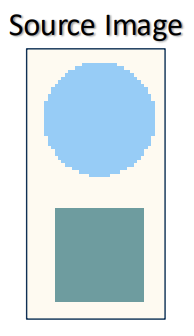
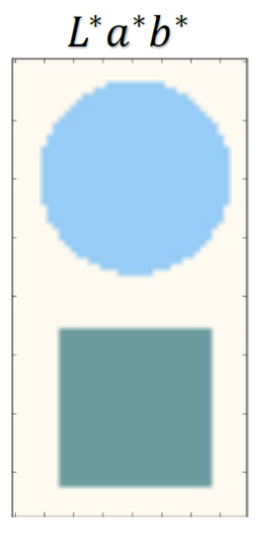
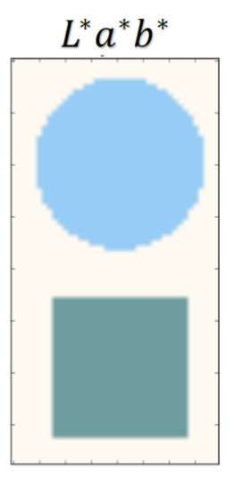
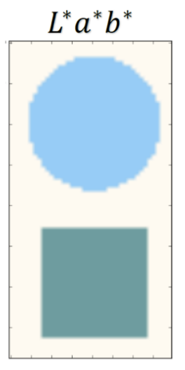

1. Lecture Objectives
In the previous lecture we introduced k-means clustering as a hard-clustering method. In this lecture, we extend clustering to a probabilistic setting by introducing Gaussian Mixture Models (GMMs), which perform soft clustering. We study how GMM parameters are estimated using the Expectation–Maximization (EM) algorithm. Finally, we explore image segmentation as a clustering problem, including feature representations, color spaces, and clustering-based segmentation methods.
2. GMM Clustering
2.1 Definition of GMM Clustering
Assume the data \(x_1,x_2,...x_N \in
\mathbb{R}^{p}\) are random variables drawn independent and
identically from an unknown distribution with probabilistic density
\(Q(x)\). GMM estimates the likelihood
of \(Q(x)\) with a linear
superposition of \(k\)
multivariate Gaussian distributions can be denoted
by:\[Q(x) =
\sum_{j=1}^{k}\pi_{j}q_{j}(x)=\sum_{j=1}^{k}\pi_{j}\mathcal{N} (x|\mu_{j},\Sigma_{j})\]
Where \(\mathcal{N}(x|\mu_{j}\Sigma_{j})\) is the
Gaussian Distribution denoted by:\[\mathcal{N}(x|\mu_{j}\Sigma_{j})=\frac{1}{(2\pi)^{\frac{p}{2}}|\Sigma|^{\frac{1}{2}}}e^{-\frac{1}{2}(x-\mu_{j})^{T}\Sigma_{j}^{-1}(x-\mu_{j})}\]
in which, the parameters
\(\mu = \{\mu_1,...\mu_k\}, \: \mu_{j} \in
\mathbb{R}^{p}\) is the cluster means;
\(\Sigma = \{\Sigma_1,...,\Sigma_k\}, \:
\Sigma_{j} \in \mathbb{R}^{p\times p}\) is the cluster
covariance matrices (Multi-variant equivalent of standard
deviation);
\(\pi = \{\pi_1,...,\pi_k\}, \: \pi_{j}\in
\mathbb{R}\) is the cluster coefficients
(Multi-variant equivalent of prior/likelihood) selecting \(\mathcal{N}(x|\mu_{j}\Sigma_{j})\),
satisfying \(\sum_{j=1}^k \pi_j =
1\)
2.1.0.1 GMM as a generative model.
A Gaussian Mixture Model (GMM) is a generative model: it describes a probabilistic mechanism by which the observed data are produced. Concretely, it introduces a latent (unobserved) cluster indicator variable \(z_i \in \{1,\dots,k\}\) for each sample \(x_i\). The model specifies (i) a prior distribution over components, \(p(z_i=j)=\pi_j\) with \(\pi_j \ge 0\) and \(\sum_{j=1}^k \pi_j = 1\), and (ii) a class-conditional distribution for the data given the component, \(p(x_i \mid z_i=j)=\mathcal{N}(x_i \mid \mu_j, \Sigma_j)\). Marginalizing out the latent variable \(z_i\) yields the mixture density \(Q(x)=\sum_{j=1}^k \pi_j \mathcal{N}(x \mid \mu_j, \Sigma_j)\) .
2.1.0.2 Soft clustering interpretation.
Unlike hard clustering methods (e.g., k-means) that assign each point to exactly one cluster, GMMs provide a soft assignment. For each sample \(x_i\), the model computes a posterior probability of belonging to each component, \(\gamma_i^j = p(z_i=j \mid x_i)\), often called the responsibility of component \(j\) for explaining \(x_i\). These responsibilities quantify uncertainty: if \(x_i\) lies in an overlap region between clusters, then multiple \(\gamma_i^j\) values may be non-negligible. In practice, one may still obtain a hard label by taking \(\arg\max_j \gamma_i^j\), but the probabilistic assignments contain richer information than a single label.
2.1.0.3 Approximating arbitrary densities.
GMMs are flexible density estimators. Intuitively, each Gaussian component can model a “local” region of the distribution, and the weighted sum of many such components can represent complex, multimodal, and non-spherical shapes. With a sufficiently large number of mixture components (and appropriate parameters), mixtures of Gaussians can approximate a wide class of smooth probability densities on \(\mathbb{R}^p\) to arbitrary accuracy. This is one reason GMMs are widely used as a general-purpose probabilistic model for clustering and density estimation .
2.1.0.4 Connection to Naive Bayes and k-means.
A helpful way to view GMM clustering is as combining ideas from probabilistic classification and centroid-based assignment. The posterior responsibility \(\gamma_i^j\) follows directly from Bayes’ rule, similar in spirit to a Naive Bayes classifier: it compares how likely \(x_i\) is under each component, weighted by the prior \(\pi_j\), and then normalizes across \(j\). At the same time, the iterative EM updates resemble k-means: in the E-step, points are “assigned” (softly) to components via responsibilities; in the M-step, the component parameters are updated using these assignments (with responsibilities acting as weights). In the special case where all covariances are equal and spherical, the EM procedure recovers behavior closely related to k-means, but the full GMM allows elliptical clusters and overlapping components.
2.2 Estimation with GMM Clustering
Similar as other methods, we could also implement MLE estimation for
GMM clustering, and write the likelihood function and log likelihood
function as follows:\[L(x,\pi,\mu,\Sigma)=\prod_{i=1}^{N}Q(x_i)=\prod_{i=1}^{N}\sum_{j=1}^{k}\pi_{j}\mathcal{N}(x|\mu_{j},\Sigma_{j})\]
\[LL(x,\pi,\mu,\Sigma)=\sum_{i=1}^{N}log\{\sum_{j=1}^{k}\pi_{j}\mathcal{N}(x|\mu_{j},\Sigma_{j})\}\]
However, since the existence of clustering structure (log of sum), there
is no close-form maxima for the likelihood function
except for \(k=1\) (\(\mu_{MLE}=\frac{1}{N}\sum_{i}^{N}x_i\),
\(\Sigma_{MLE}=\frac{1}{N}\sum_{i=1}^{N}(x_i-\mu_{MLE})(x_i-\mu_{MLE})^{T}\)).
Therefore, we could utilize the Expectation Maximization (EM)
Algorithm , which
iteratively estimates the mean \(\mu_j\) with \(\gamma_i^{j}\), and in turn estimates the
posterior.
The posterior \(\gamma_i^{j}\), which
is also known as the responsibility of cluster j for
sample \(x_i\), can be derived using
Bayes Rule:\[\gamma_i^{j}=p(z_i=j|x_i)=\frac{\pi_j\mathcal{N}(x_i|\mu_j,\Sigma_j)}{\sum_{j=1}^{k}\pi_j\mathcal{N}(x_i|\mu_j,\Sigma_j)}\]
The specific steps are as following:
Initialization: Initialize the mean \(\mu_j^{(0)}\), covariance \(\Sigma_j^{(0)}\) and mixing coefficient \(\pi_j^{(0)}\).
(A good initialization is \(\mu_j^{(0)} =\)random sample \(x_i\); \(\Sigma_j^(t)=\)sample covariance; \(\pi_j^{(0)}=\frac{1}{k}\))Expectation: compute the responsibility with current parameters\[(\gamma_i^j)^{(t)}=\frac{\pi_j^{(t)}\mathcal{N}(x_i|\mu_j^{(t)},\Sigma_j^{(t)})}{\sum_{j=1}^{k}\pi_j^{(t)}\mathcal{N}(x_i|\mu_j^{(t)},\Sigma_j^{(t)})}\]
Maximization: Re-estimate the parameters using the current responsibilities\[\mu_j^{(t+1)}=\frac{\sum_{i=1}^{N}(\gamma_i^{j})^{(t)}x_i}{\sum_{i=1}^{N}(\gamma_{i}^{j})^{(t)}}\] \[\Sigma_j^{(t+1)}=\frac{\sum_{i=1}^{N}(\gamma_i^{j})^{(t)}(x_i-\mu_j^{(t+1)})(x_i-\mu_j^{(t+1)})^{T}}{\sum_{i=1}^{N}(\gamma_i^{j})^{(t)}}\] \[\pi_j^{(t+1)}=\frac{1}{N}\sum_{i=1}^{N}(\gamma_i^{j})^{(t)}\]
Convergence Check: Evaluate the log likelihood\[LL(x,\pi,\mu,\Sigma)=\sum_{i=1}^{N}log\{\sum_{j=1}^{k}\pi_{j}\mathcal{N}(x|\mu_{j},\Sigma_{j})\}\] to see if there’s convergence, given by\[|(LL(x,\pi,\mu,\Sigma))^{(t+1)} - (LL(x,\pi,\mu,\Sigma))^{(t)}| \leq \epsilon\]if not, go back to step 2.
2.3 Aside: EM vs MLE
It is important to distinguish between Maximum Likelihood Estimation (MLE) and the Expectation–Maximization (EM) algorithm introduced above . In classical MLE, we directly maximize the likelihood function with respect to the model parameters. This is feasible when the likelihood has a tractable analytical form or when gradients can be computed directly. However, in many realistic models—including Gaussian Mixture Models—there exist hidden (latent) variables that are not observed in the data. The presence of these latent variables makes the likelihood involve a logarithm of a sum, which prevents a closed-form maximization and makes direct MLE (or even MAP estimation) difficult.
The EM algorithm provides an iterative strategy for obtaining MLE or MAP estimates in such latent-variable models. Rather than optimizing the incomplete-data likelihood directly, EM alternates between estimating the missing latent information and optimizing the parameters given those estimates. Importantly, EM is a general optimization framework and is not limited to GMMs; it is widely used in many probabilistic models that involve hidden variables.
In the Expectation step (E-step), the algorithm computes the expected value of the complete-data log-likelihood with respect to the current distribution of the latent variables. Intuitively, this step “fills in” the missing information by estimating how likely each latent configuration is under the current parameter values. In the case of GMMs, this corresponds to computing the responsibilities \(\gamma_i^j\), which represent the probability that each data point was generated by each mixture component.
In the Maximization step (M-step), the algorithm updates the model parameters by maximizing this expected log-likelihood. Using the responsibilities as soft assignments, the parameters are re-estimated to better explain the data. The E-step and M-step are repeated until the log-likelihood converges, guaranteeing a monotonic increase in the likelihood at each iteration.
2.4 Example of GMM Clustering
We are going to implement EM Algorithm for a Gaussian mixture of 2 models.
2.4.1 Initialization
We can initialize the EM Algorithm as follows:
Interactive Notebook: Lecture 12.3 Clustering Metrics
Compute internal and external clustering metrics on the same data and compare outcomes.
2.4.2 Iteration 0
We can calculate the parameters for iteration \(0^{th}\) as following:
Cluster Means: \[\mu_1 =
\begin{bmatrix}
0.6496 \\
4.6208
\end{bmatrix}, \quad
\mu_2 =
\begin{bmatrix}
4.7642 \\
0.2020
\end{bmatrix}\]
Cluster Covariances: \[\Sigma_1 = \begin{bmatrix} 5.3102 & 0.0000 \\ 0.0000 & 4.2118 \end{bmatrix}, \quad \Sigma_2 = \begin{bmatrix} 5.4851 & 0.0000 \\ 0.0000 & 1.7956 \end{bmatrix}\] Cluster Means: \[\mu_1 = \begin{bmatrix} 1.1000 \\ 2.1000 \end{bmatrix}, \quad \mu_2 = \begin{bmatrix} 2.9000 \\ 3.9000 \end{bmatrix}\]
Cluster Covariances: \[\Sigma_1 = \begin{bmatrix} 1.1052 & 0.0000 \\ 0.0000 & 2.2103 \end{bmatrix}, \quad \Sigma_2 = \begin{bmatrix} 3.3155 & 0.0000 \\ 0.0000 & 4.4207 \end{bmatrix}\]

2.4.3 Iteration 50
We can calculate the new parameters for iteration \(50^{th}\) as following:
Cluster Means: \[\mu_1 =
\begin{bmatrix}
2.0690 \\
3.0228
\end{bmatrix}, \quad
\mu_2 =
\begin{bmatrix}
2.7500 \\
2.2505
\end{bmatrix}\]
Cluster Covariances: \[\Sigma_1 = \begin{bmatrix} 5.5456 & 0.0000 \\ 0.0000 & 7.5187 \end{bmatrix}, \quad \Sigma_2 = \begin{bmatrix} 9.9789 & 0.0000 \\ 0.0000 & 7.4052 \end{bmatrix}\]

2.4.4 Iteration 100
We can calculate the parameters for iteration \(100^{th}\) as following:
Cluster Means: \[\mu_1 =
\begin{bmatrix}
0.6496 \\
4.6208
\end{bmatrix}, \quad
\mu_2 =
\begin{bmatrix}
4.7642 \\
0.2020
\end{bmatrix}\]
Cluster Covariances: \[\Sigma_1 = \begin{bmatrix} 5.3102 & 0.0000 \\ 0.0000 & 4.2118 \end{bmatrix}, \quad \Sigma_2 = \begin{bmatrix} 5.4851 & 0.0000 \\ 0.0000 & 1.7956 \end{bmatrix}\]

2.4.5 Iteration 150
We can calculate the parameters for the \(150^{th}\) iteration as following:
Cluster Means: \[\mu_1 =
\begin{bmatrix}
0.6496 \\
4.6208
\end{bmatrix}, \quad
\mu_2 =
\begin{bmatrix}
4.7642 \\
0.2020
\end{bmatrix}\]
Cluster Covariances: \[\Sigma_1 = \begin{bmatrix} 5.3102 & 0.0000 \\ 0.0000 & 4.2118 \end{bmatrix}, \quad \Sigma_2 = \begin{bmatrix} 5.4851 & 0.0000 \\ 0.0000 & 1.7956 \end{bmatrix}\]

Keep iterating until the log likelihood converges. Note:
The diagonals of the cluster covariances are standard deviations and measure the length of the cluster shape on an axis.
While Gaussian Mixture Models provide a flexible probabilistic framework for clustering, it is equally important to understand how clustering methods are applied in real-world settings. One particularly important application is image segmentation, where clustering is used to group pixels into meaningful regions based on similarity.
3. Image Segmentation as a Clustering Problem
Clustering methods such as k-means, Gaussian Mixture Models (GMMs), and mean shift can be applied to real-world data such as images. One important application is image segmentation, where the goal is to partition an image into meaningful regions.
3.1 Images as Feature Representations
An image consists of a grid of pixels. Each pixel can be represented as a feature vector. In the simplest case:
\[x_i = [R_i, G_i, B_i]\]
Segmentation can therefore be formulated as a clustering problem where each pixel is assigned to a cluster based on similarity.
3.2 Color Spaces for Segmentation
RGB space is not ideal for clustering because it does not align well with human perception. Alternative color spaces such as LAB are often preferred in image segmentation pipelines because they separate luminance and chrominance more effectively :
\[x_i = [L_i, a_i, b_i]\]
This makes clustering more meaningful.

Source Image

GMM (\(L^*a^*b^*\))
3.3 Feature Construction for Pixels
Pixel features can include spatial information:
\[x_i = [L_i, a_i, b_i, x_i, y_i]\]
This encourages spatially close pixels to belong to the same segment.
3.4 Clustering-Based Segmentation Methods
k-means: a hard-clustering method that assigns each pixel to exactly one cluster. It is efficient, but requires specifying the number of clusters \(k\) in advance.
GMM: a soft-clustering method that assigns pixels according to posterior probabilities, making it more flexible when color distributions overlap.
Mean Shift: a density-based method that finds clusters as modes of the feature distribution and does not require specifying the number of clusters beforehand .
We now compare how different clustering algorithms produce segmentation results on the same image:
Source

k-means
GMM

Mean Shift
3.5 Connection to Homework 4
Connection to HW4: In Homework 4, segmentation is performed by clustering pixels into groups based on their feature representations. The choice of feature space (RGB vs LAB) and clustering method directly affects performance.
5. References
[]
Dempster, A. P., Laird, N. M., & Rubin, D. B. (1977). Maximum likelihood from incomplete data via the EM algorithm. Journal of the Royal Statistical Society: Series B.
Bishop, C. M. (2006). Pattern Recognition and Machine Learning. Springer.
Comaniciu, D., & Meer, P. (2002). Mean shift: A robust approach toward feature space analysis. IEEE Transactions on Pattern Analysis and Machine Intelligence.
Achanta, R., Shaji, A., Smith, K., Lucchi, A., Fua, P., & Süsstrunk, S. (2012). SLIC superpixels compared to state-of-the-art superpixel methods. IEEE Transactions on Pattern Analysis and Machine Intelligence.